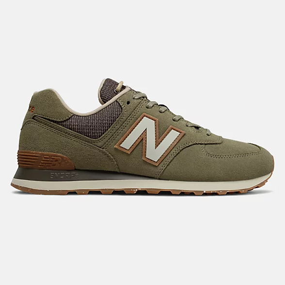

Stay warm, look great. Our winter jackets let you do both, with ease.
Shop now
Get back to basics with our 574 Premium Outdoors. These men's sneakers have a classic low-profile design for a stylish look you can wear anywhere. The leather and suede upper add flair to any casual look while the rugged tread pattern provides a solid grip for confident footing. These classic shoes for men have an ENCAP midsole and EVA cushioning for unbeatable comfort no matter where your day takes you.
Although this is a men's shoe, it is available in smaller sizes to suit everyone's needs. Please check the size chart to find your size.
PRODUCT DETAILS // Toggle //Need help?